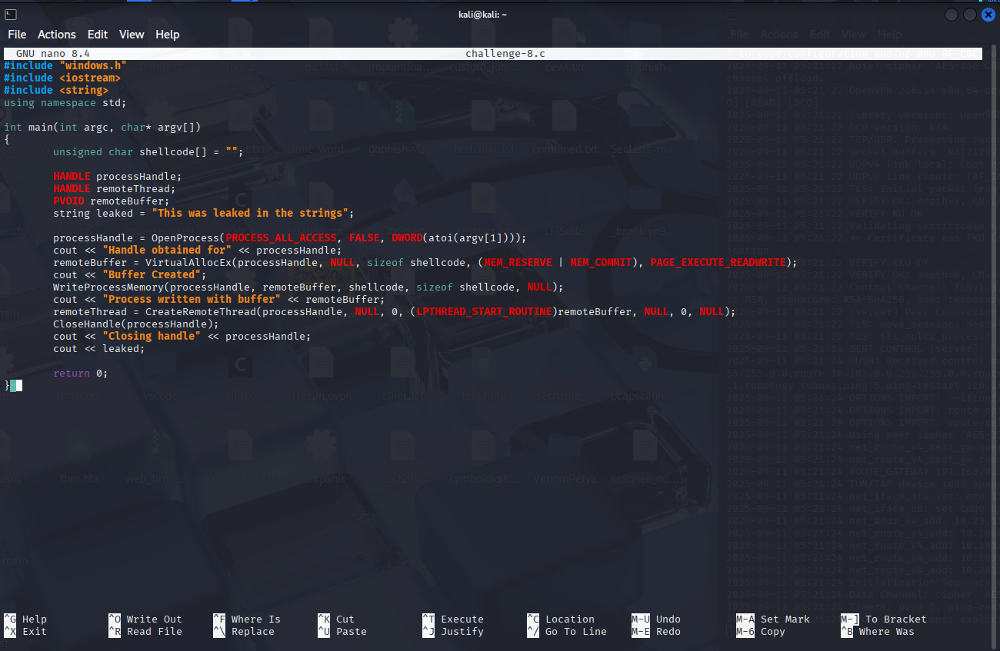
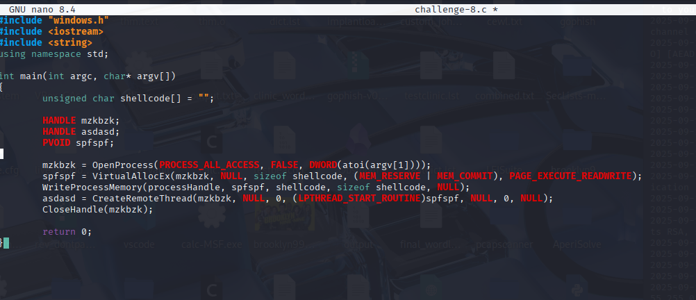
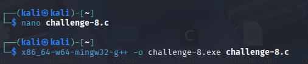
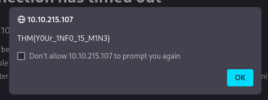

Obfuscation Principles
Obfuscation Principles
Obfuscation is a technique widely used across software development to protect intellectual property (IP) and proprietary information. A well-known example is Minecraft, which employs the ProGuard obfuscator to minimize and obscure its Java classes. To support the modding community, Minecraft also releases partial obfuscation maps, translating between obfuscated and original class names.
The broader field of obfuscation encompasses a wide range of methods, documented in the research paper Layered Obfuscation: A Taxonomy of Software Obfuscation Techniques for Layered Security. This taxonomy organizes obfuscation techniques by layers, comparable to the OSI model, but applied to application data flow. The four layers are the Code-Element Layer, Software-Component Layer, Inter-Component Layer, and Application Layer, each with sub-layers detailing specific methods.
In this context, emphasis is placed on the Code-Element Layer, which includes the following sub-layers: Obfuscating Layout, Obfuscating Controls, Obfuscating Data, Obfuscating Methods, and Obfuscating Classes. Each sub-layer contains strategies tailored to a specific goal. For instance, to obfuscate code layout without altering the program’s functionality, developers can inject junk code:
Code-Element Layer > Obfuscating Layout > Junk Codes
While obfuscation serves legitimate purposes, such as protecting software IP, it can also be abused maliciously. Adversaries and malware developers leverage obfuscation to break AV signatures or complicate program analysis, making detection and reverse engineering significantly harder
Obfuscation’s Function for Static Evasion
Two major security boundaries that adversaries must overcome are antivirus engines and EDR (Endpoint Detection & Response) solutions. Both rely on static signatures (databases of known patterns) and heuristic signatures (behavior-based analysis) to detect malicious code. To evade these detections, adversaries often turn to obfuscation, particularly data obfuscation, which hides identifiable information within otherwise legitimate-looking applications.
According to the Layered Obfuscation Taxonomy paper, these practices are organized within the Code-Element Layer, specifically under the Obfuscating Data Sub-Layer. The taxonomy highlights several key methods:
Array Transformation – modifies arrays by splitting, merging, folding, or flattening them.
Data Encoding – applies mathematical functions or ciphers to obscure data.
Data Procedurization – replaces static data with dynamically generated values through procedure calls.
Data Splitting/Merging – breaks a variable into multiple parts or combines several variables into one.
For initial obfuscation, focus is often placed on data splitting/merging, since static signatures are relatively weaker and easier to bypass at this stage. Other techniques, such as data encoding, procedurization, and array transformation, play supporting roles and are covered in more detail in related topics like Encoding/Packing/Binder/Crypters and Signature Evasion.
Object Concatenation
Concatenation is the process of combining two or more separate objects into one, typically strings. Each programming language supports its own set of concatenation operators—for example, Python uses "+", PowerShell can use "+", ",", "${content}quot;, or even no operator, while C and C++ rely on functions like strcat or append.
Within the Layered Obfuscation Taxonomy, concatenation is categorized under the Code-Element Layer → Data Splitting/Merging sub-layer. For attackers, concatenation becomes a valuable tool for signature evasion. By splitting strings that are normally detectable, malware can disguise itself from static scanners such as Yara rules.
Consider the example rule:
If a binary contains "AmsiScanBuffer", the Yara rule will flag it. However, by concatenating the string:
IntPtr ASBPtr = GetProcAddress(TargetDLL, "Amsi" + "Scan" + "Buffer");
the string becomes functionally identical at runtime but no longer matches the static signature, successfully evading detection.
Beyond concatenation, attackers can further obfuscate signatures with non-interpreted characters, which alter string representation without changing execution:
Breaks – split into smaller substrings: ('co'+'ffe'+'e')
Reorders – reorder parts of strings: ('{1}{0}' -f 'ffee','co')
Whitespace – insert non-interpreted spaces: .( 'Ne' +'w-Ob' + 'ject')
Ticks – insert backticks into tokens: downLoAdString
Random Case – arbitrary casing to avoid exact matches: dOwnLoAdsTRing
Obfuscation’s Function for Analysis Deception
Once the basic functions of malicious code are obfuscated, it may successfully bypass software detections but still remains vulnerable to human analysis by malware analysts and reverse engineers. While not a strict security boundary, manual inspection can reveal the application’s functionality and lead to its disruption. To counter this, adversaries turn to advanced logic and mathematical obfuscation techniques that make code significantly more complex and resistant to reverse engineering.
The Layered Obfuscation Taxonomy categorizes these practices within the Code-Element Layer, specifically under the Obfuscating Layout and Obfuscating Controls sub-layers. Key methods include:
Junk Code – inserting non-functional instructions (also called code stubs) to confuse analysis.
Separation of Related Code – scattering logically related instructions, making program flow harder to follow.
Stripping Redundant Symbols – removing symbolic information (like debug data or symbol tables) to obscure context.
Meaningless Identifiers – replacing descriptive variable and function names with meaningless ones.
Implicit Controls – converting explicit control instructions into indirect or hidden ones.
Dispatcher-based Controls – using runtime mechanisms to determine which block of code executes next.
Probabilistic Control Flows – replicating control flows that behave the same semantically but look different syntactically.
Bogus Control Flows – inserting fake control paths that will never be executed but mislead analysis.
Together, these techniques make malicious programs difficult to read, debug, and reverse engineer, extending protection beyond defeating automated detection to resisting manual inspection and behavioral analysis.
Code Flow and Logic
Control flow defines the logical path a program will take during execution. It is driven by logic statements such as if/else, try/catch, switch case, and for/while loops, which determine whether code blocks are executed or skipped. Normally, a program executes top-down, but when a conditional is encountered, execution diverts into the corresponding branch before continuing. For example:
This produces a Control Flow Graph (CFG) with two potential paths, though only one executes.
For attackers, this is highly relevant. Analysts often rely on control flow analysis to reverse engineer and understand a program’s true purpose. However, control flow is also one of the easiest aspects of a program to manipulate. By adding obscure, arbitrary, or misleading logic, adversaries can drastically increase the difficulty of analysis. The goal is to make the program confusing without breaking functionality, while avoiding excessive obfuscation that could raise suspicion or trigger heuristic detections.
Arbitrary Control Flow Patterns
Arbitrary control flow patterns can be created by injecting additional maths, logic, or algorithms into a malicious function. A key tool for this is the use of predicates—boolean conditions that decide whether code executes, similar to the condition in an if statement.
When applied to obfuscation, adversaries use opaque predicates. These are predicates where the outcome is already known to the obfuscator but is deliberately made hard to deduce by analysts. According to the paper Opaque Predicate: Attack and Defense in Obfuscated Binary Code, an opaque predicate “is a predicate whose value is known to the obfuscator but is difficult to deduce.” This means they can be combined with methods like junk code to create bogus or probabilistic control flows, greatly complicating reverse engineering.
A common example of an opaque predicate is the Collatz Conjecture, a mathematical problem stating that repeatedly applying two simple arithmetic operations to any positive integer will eventually yield 1. Because this is guaranteed for all positive integers, it makes an excellent opaque predicate:
Here, the logic executes only if x > 1, but by definition of the Collatz problem, the loop will always eventually reduce any positive integer to 1. Thus, the obfuscator knows the outcome, but an analyst must work through the math to understand why the branch always resolves the same way.
In practice, this creates a confusing Control Flow Graph (CFG). What looks like a complex series of conditional paths is, in reality, a deterministic result. For a compiled function, the obfuscation becomes even more difficult to untangle, forcing analysts to sift through arbitrary control logic that serves no functional purpose beyond wasting time and effort.
Task 7 Challenge
Using the knowledge you have accrued throughout this task, put yourself into the shoes of an analyst and attempt to decode the original function and output of the code snippet below. If you correctly follow the print statements, it will result in a flag you can submit.
The given code snippet begins with a Collatz sequence check (x = 3). As the loop executes, the value of x eventually reduces to 1, which triggers a nested loop that iterates through several case arrays (case_1 … case_6). Each iteration follows a switch statement (swVar) that determines which array element to print and how the state variables (a, b, swVar) change.
Tracing through the execution step by step:
The program starts with swVar = 1, printing T, then switches to case 2.
Case 2 prints H, moves to case 3.Case 3 prints M, updates values, and jumps to case 4.
Case 4 prints {, then moves to case 5.
Case 5 prints D, loops back to case 2.
The alternating logic between cases 2, 3, 4, and 5 continues, printing characters one by one.
Eventually, as the variables grow, the flow reaches case 6, which prints the last two characters and breaks the loop.
Following the print statements in order reveals: THM{D3cod3d!!!}
Protecting and Stripping Identifiable Information
Identifiable information can be one of the most critical components an analyst can use to dissect and attempt to understand a malicious program. By limiting the amount of identifiable information (variables, function names, etc.), an analyst has, the better chance an attacker has they won’t be able to reconstruct its original function.
At a high level, we should consider three different types of identifiable data: code structure, object names, and file/compilation properties. In this task, we will break down the core concepts of each and a case study of a practical approach to each.
Object Names
Object names offer some of the most significant insight into a program’s functionality and can reveal the exact purpose of a function. An analyst can still deconstruct the purpose of a function from its behavior, but this is much harder if there is no context to the function.
The importance of literal object names may change depending on if the language is compiled or interpreted.
If an interpreted language such as Python or PowerShell is used, then all objects matter and must be modified. If a compiled language such as C or C# is used, only objects appearing in the strings are generally significant. An object may appear in the strings by any function that produces an IO operation.
The aforementioned white paper: Layered Obfuscation Taxonomy, summarizes these practices well under the code-element layer’s meaningless identifiers method.
Below we will observe two basic examples of replacing meaningful identifiers for both an interpreted and compiled language.
As an example of a compiled language, we can observe a process injector written in C++ that reports its status to the command line.
We will now use strings to see exactly what was leaked when this source code is compiled.
All of iostream was written into strings, and even the shellcode byte array was leaked.
If all of this can happen within a smaller program, then surely a full-scale unobfuscated program would look much more complex.
To resolve this leakage issue, we can remove comments and replace the meaningful identifiers:
Now, there shouldn’t be anymore identifiable string information, and the program is safe from string analysis.
As an example for an interpreted language, we can observe the deprecated Badger Powershell Loader from the BRC4 Community Kit.
https://github.com/paranoidninja/Brute-Ratel-C4-Community-Kit
In this case, we do still keep some functions and cmdlets in the original stage, since sometimes we may want to create an application that can still confuse reverse engineers after detection but may not look immediately suspicious.
If a malware developer were to obfuscate all cmdlets and functions, it would raise the entropy in both interpreted and compiled languages resulting in higher EDR alert scores. It could also lead to an interpreted snippet appearing suspicious in logs if it is seemingly random or visibly heavily obfuscated.
Code Structure
Code structure can be a bothersome problem when dealing with all aspects of malicious code that are often overlooked and not easily identified. If not adequately addressed in both interpreted and compiled languages, it can lead to signatures or easier reverse engineering from an analyst.
As covered in the aforementioned taxonomy paper, junk code and reordering code are both widely used as additional measures to add complexity to an interpreted program. Because the program is not compiled, an analyst has much greater insight into the program, and if not artificially inflated with complexity, they can focus on the exact malicious functions of an application.
Separation of related code can impact both interpreted and compiled languages and result in hidden signatures that may be hard to identify. A heuristic signature engine may determine whether a program is malicious based on the surrounding functions or API calls. To circumvent these signatures, an attacker can randomize the occurrence of related code to fool the engine into believing it is a safe call or function.
File & Compilation Properties
More minor aspects of a compiled binary, such as the compilation method, may not seem like a critical component, but they can lead to several advantages to assist an analyst. For example**, if a program is compiled as a debug build, an analyst can obtain all the available global variables and other program information.**
The compiler will include a symbol file when a program is compiled as a debug build. Symbols commonly aid in debugging a binary image and can contain global and local variables, function names, and entry points. Attackers must be aware of these possible problems to ensure proper compilation practices and that no information is leaked to an analyst.
Luckily for attackers, symbol files are easily removed through the compiler or after compilation. To remove symbols from a compiler like Visual Studio, we need to change the compilation target from Debug to Release or use a lighter-weight compiler like mingw.
If we need to remove symbols from a pre-compiled image,
we can use the command-line utility: strip
The aforementioned white paper: Layered Obfuscation Taxonomy, summarizes these practices well under the code-element layer’s stripping redundant symbols method.
Below is an example of using strip to remove the symbols from a binary compiled in gcc with debugging enabled.
Several other properties should be considered before actively using a tool, such as entropy or hash. These concepts are covered in task 5 of the Signature Evasion room.
Using the knowledge you have accrued throughout this task, remove any meaningful identifiers or debug information from the C++ source code below using the AttackBox or your own virtual machine. Once adequately obfuscated and stripped compile the source code using MingW32-G++ and submit it to the webserver. Note: the file name must be challenge-8.exe to receive the flag.
What flag is found after uploading a properly obfuscated snippet? Hint : To build the source, use x86_64-w64-mingw32-g++ challenge-8.cpp -o challenge-8.exe.

First, I create the challenge-8.c file:First, we will change the names for these variables, and also any occurrences of them:
processHandle -> mzkbzk
remoteThread -> asdasd
remoteBuffer -> spfspf
Then, we remove the leaked string, as well as any “cout”-s.

This is the result of the uncompiled code:So now we compile it.

Now let’s upload it to THM’s file server for this challenge and see if it fits the criteria.
